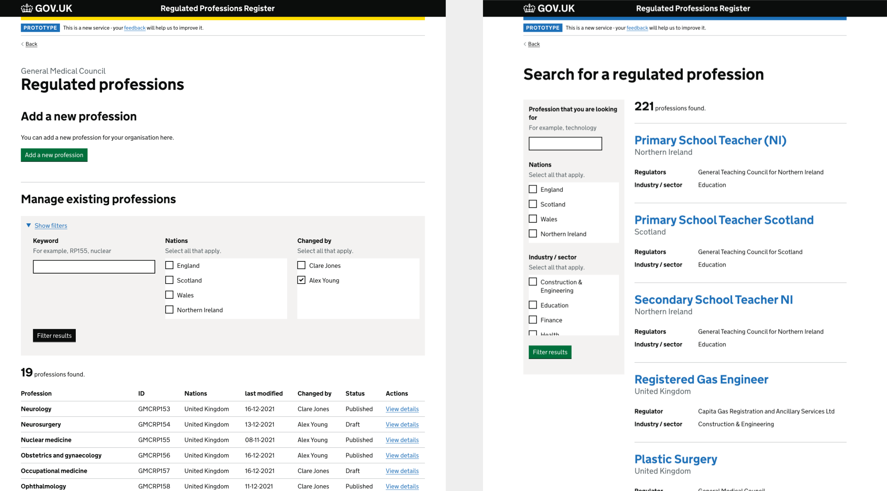
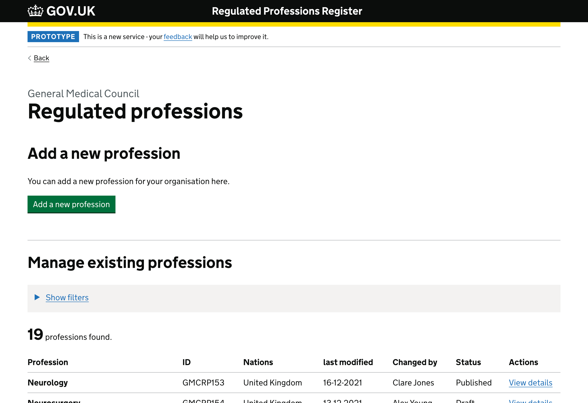
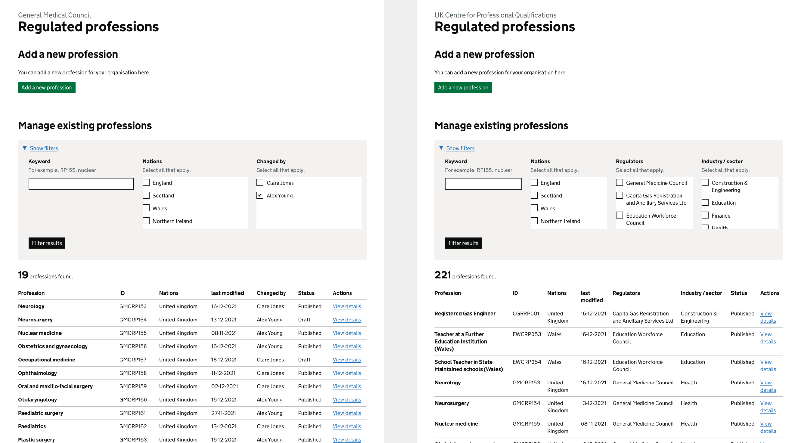
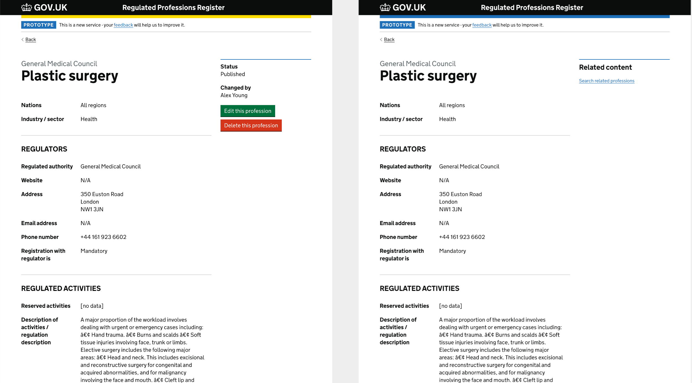
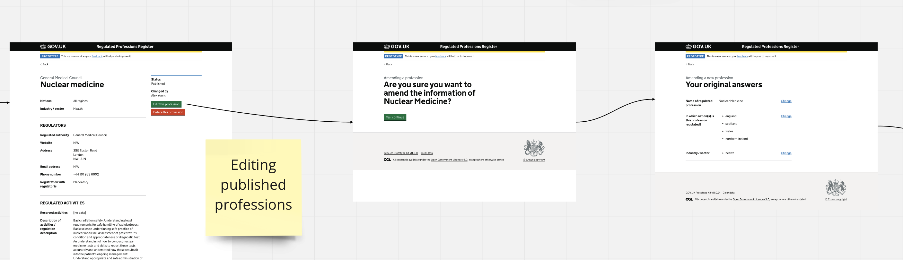
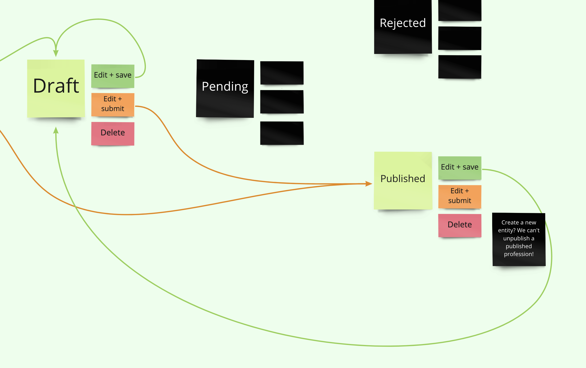

Overview
We had a meeting of the internal facing prototype review. The internal professions search, amending professions and status changes were discussed. Key design decisions made are as follows.
Header colour
Ming has seen some other internal services having a different colour for the border of the main header so he suggested to use the govuk-colour("yellow") (#ffdd00) to distinguish the internal interface from the public facing one.
 Yellow border for the header (internal facing)
Yellow border for the header (internal facing)
A different design of professions listing page for internal users
We agreed that internal users have different user needs and different preferred devices so we want to have a more horizontal design for the internal professions listing page instead of re-using the public facing one.
Different listing page design. Left - Internal; Right - Public facing
{kind=link}
Page width of the professions listing page
Since we believe most of the internal users are using desktop or laptop,
we agreed to expand the page width of the listing page to 1200px (instead of the default 960px) for better use of space.
Wider page width for professions listing page
{kind=link}
Different professions, table headings and filters for different users
We believe that RA users and BEIS/UKCPQ users may have different user needs, so there will be some little difference for the professions listing page they will see. We had a discussion and decided to have the following content:
Different table headings and filters. Left - RA users; Right - UKCPQ users
{kind=link}
Professions for RA users
- They will only see professions within their organisation
Table headings for RA users
- Profession’s title
- Profession ID
- Nations
- Last modified date
- Changed by
- Status
Filters for RA users
- Keyword search
- Nations
- Changed by
Professions for BEIS/UKCPQ users
- They will see professions from all RAs
Table headings for BEIS/UKCPQ users
- Profession’s title
- Profession ID
- Nations
- Last modified date
- Regulators
- Industry / sector
- Status
Filters for for BEIS/UKCPQ users
- Keyword search
- Nations
- Regulators
- Industry / sector
Re-use the profession details page
We will re-use the profession details page from the public facing one and add options to the sidebar.
Profession details page. Left - Internal; Right - Public facing
{kind=link}
Amending published professions
We agreed that the start of the amending published profession will be similar to the check your answers page of the adding a new profession journey. The rest of the pages will be the same.
Amending published profession
{kind=link}
We also agreed that amending a published profession will not unpublish the original profession, but will create an extra instance of the profession and it will become a draft.
Amending published profession - new entity created
{kind=link}